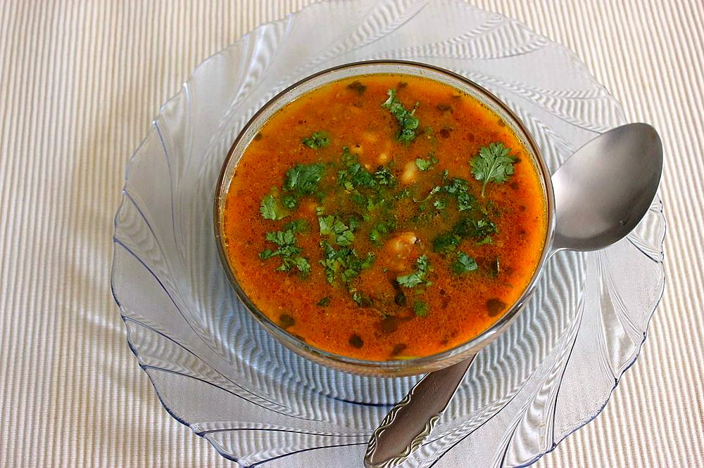

Start the day before. The soaking alone is 4 hr, against 60 min of actual work.
Allergens: none of the ten listed below
Ingredients
Quantities for 4.
- 1.5 cups dried black-eyed peas Lobiaalsande
- 1 cup grated fresh Coconut
- 8 Kashmiri Dried Red Chilli
- 1 tbsp Coriander Powder
- 1 tsp Cumin Seeds
- 1/2 tsp Black Pepper
- 4 Cloves
- 2cm piece Cinnamon
- 1/2 tsp Turmeric
- 2 medium, finely chopped Onion
- 5 cloves, crushed Garlic
- 2 tsp thick pulp Tamarind
- 1 tsp Jaggeryrounds off the tamarindoptional
- 3 tbsp Coconut Oil
- 2 tbsp, chopped Coriander Leavesoptional
- to taste Salt
Cookware
stovetop, pressure cooker, blender
Checked against the ingredient list for ten allergens: milk, egg, fish, crustaceans, tree nuts, peanuts, sesame, mustard, soy and gluten. Brands vary, so read the label on anything new to you.
Before you start
- Soak the black-eyed peas in plenty of cold water for 4 hours, or overnight if that is easier. They cook unevenly unsoaked.
- Soak the tamarind in 3 tbsp hot water and press out the pulp.
- Grate the coconut before you start cooking. The roasting step wants your full attention.
Method
- Drain the soaked peas and pressure-cook them with 3 cups water and 1/2 tsp salt for 3 whistles, about 12 minutes. They should give completely under a thumb but hold their shape.Undercooked alsande stays chalky in the middle no matter how long the curry simmers afterwards.
- Dry-roast the grated coconut in a heavy pan over low heat 10 minutes, stirring, until it is evenly brown and smells toasted.Stop when it looks like coarse brown sugar. Darker than that and the curry turns bitter.
- Add the chillies, coriander powder, cumin, pepper, cloves and cinnamon to the pan and roast 90 seconds more.
- Grind the roasted coconut and spices with the turmeric and 200ml warm water to a smooth thick paste.
- Heat the coconut oil in a pot and fry the onion 8 minutes until soft and light gold, then add the garlic for 1 minute.
- Stir in the ground masala and cook 6-8 minutes until it darkens by a shade and oil separates at the edges.
- Tip in the cooked peas with their liquid, add 200ml hot water and salt, and simmer uncovered 12 minutes until the gravy thickens.
- Stir in the tamarind pulp and jaggery, simmer 3 minutes, then taste. It should read sour first, then sweet, then hot.
- Finish with coriander leaves and serve with rice or with pav.
Storage
Keeps 4 days refrigerated and thickens as it sits. Loosen with hot water when reheating. Freezes well for 2 months.
Nutrition Medium estimate
Medium protein: 17 g a serving, 16% of the calories
| Per serving166 g | Per 100 g | |
|---|---|---|
| Calories | 423 kcal | 255 kcal |
| Protein | 16.9 g | 10 g |
| Carbohydrate | 51.8 g | 31 g |
| of which sugars | 10.1 g | 6 g |
| Fibre | 10.7 g | 6 g |
| Fat | 18.3 g | 11 g |
| of which saturated | 14.6 g | 9 g |
| of which unsaturated | 2.1 g | 1 g |
Ingredients given to taste count as zero, so the real figures run a little higher. Nearest database match used for jaggery. Estimated from raw ingredients using USDA FoodData Central.
More like this: Vegan Indian recipes · Vegetarian Indian recipes · Gluten-free Indian recipes · Dairy-free Indian recipes · Goan recipes
Times, yields, allergens and nutrition are guidance. Use your own judgement on doneness and on storing. More in About.